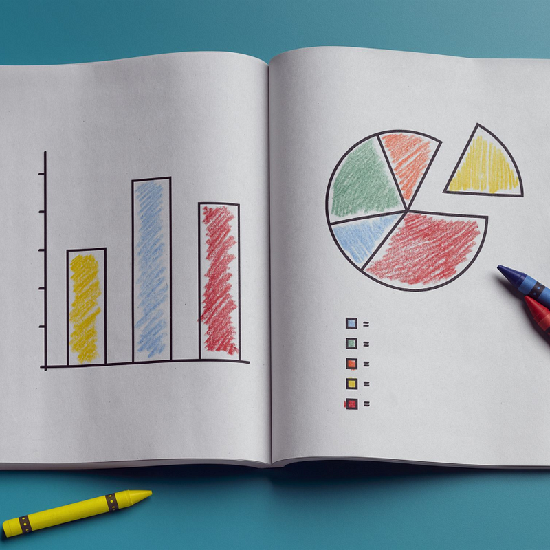

Shapes of Understanding: Exploring ggplot2’s Geometries

The Power of Geometries in ggplot2
Picture yourself walking through an art gallery, each painting telling a unique story through a mix of colors, shapes, and textures. These visual elements work in harmony to convey the artist’s intended narrative, capturing your imagination and drawing you into the world of each masterpiece. In the realm of data visualization, ggplot2’s geometries play a similar role, serving as the building blocks that give form and structure to the stories our data has to tell.
In ggplot2, geometries — or “geoms” for short — define the visual representation of our data points. From simple scatter plots and bar charts to intricate heatmaps and contour plots, ggplot2 offers a versatile palette of geoms to help us craft the perfect visualization. With this powerful toolkit at our disposal, we can breathe life into our data, transforming rows and columns of raw numbers into captivating visual narratives that resonate with our audience.
In this post, we’ll explore the world of ggplot2 geometries, unveiling their potential and uncovering the secrets to creating stunning visualizations. So, let your creativity run wild as we embark on this artistic journey through ggplot2’s geometries, and unlock the true potential of your data’s story.
The Foundations: Common Geometries and Their Uses
Just as every artist begins their journey by mastering the fundamentals, our exploration of ggplot2 geometries starts with the basic shapes that form the foundation of many data visualizations. These common geoms, like the brush strokes of a painter, allow us to illustrate our data in various ways, each revealing different aspects of its story.
geom_point(): Scatter plots
Scatter plots are like constellations in the night sky, revealing patterns and relationships hidden among the stars. With geom_point(), we can create scatter plots to display the relationship between two continuous variables. For example, let’s explore the relationship between Sepal.Length and Sepal.Width in the iris dataset:
library(ggplot2)
p <- ggplot(iris, aes(x = Sepal.Length, y = Sepal.Width))
p + geom_point() + labs(title = "Sepal Length vs. Sepal Width", x = "Sepal Length", y = "Sepal Width")
geom_line(): Line plots
Line plots weave a thread through our data points, connecting them to reveal trends and changes over time. With geom_line(), we can create line plots to display the relationship between a continuous variable and a categorical or ordinal variable, often time. For instance, let’s visualize the change in life expectancy over time using the gapminder dataset:
library(gapminder)
library(tidyverse)
p <- ggplot(gapminder %>% filter(country %in% c("Poland", "Germany", "Vietnam", "United Kingdom")),
aes(x = year, y = lifeExp, color = country))
p + geom_line() + labs(title = "Life Expectancy Over Time in Poland, Germany, Vietnam and UK", x = "Year", y = "Life Expectancy")
geom_bar(): Bar plots and histograms
Bar plots are like the pillars of an ancient temple, standing tall to represent the magnitude of different categories. With geom_bar(), we can create bar plots to display the count or proportion of observations in each category of a discrete variable. For example, let’s examine the distribution of car brands in the mtcars dataset:
p <- ggplot(mtcars, aes(x = factor(cyl)))
p + geom_bar() + labs(title = "Distribution of Number of Cylinders", x = "Number of Cylinders", y = "Count")
Histograms, a close cousin of bar plots, use geom_histogram() to visualize the distribution of a continuous variable by dividing it into bins and counting the number of observations in each bin. Let’s create a histogram of the diamond carat sizes from the diamonds dataset:
p <- ggplot(diamonds, aes(x = carat))
p + geom_histogram(binwidth = 0.1) + labs(title = "Distribution of Diamond Carat Sizes", x = "Carat Size", y = "Count")
geom_boxplot(): Box plots
Box plots are like the blueprints of a building, summarizing the key features of a distribution with a few simple lines and boxes. With geom_boxplot(), we can create box plots to display the distribution of a continuous variable across different categories, illustrating the median, quartiles, and possible outliers. For example, let’s compare the price of diamonds across different cuts using the diamonds dataset:
p <- ggplot(diamonds, aes(x = cut, y = price))
p + geom_boxplot() + labs(title = "Price by Diamond Cut", x = "Cut", y = "Price")
geom_tile(): Heatmaps
Heatmaps are like impressionist paintings, using a blend of colors to represent the intensity of values in a matrix. With geom_tile(), we can create heatmaps to display the relationship between two discrete variables and a third continuous variable, represented by color. For instance, let’s visualize the relationship between cut and clarity of diamonds in the diamonds dataset, with the average price represented by color:
library(dplyr)
diamonds_summary <- diamonds %>%
group_by(cut, clarity) %>%
summarise(avg_price = mean(price))
p <- ggplot(diamonds_summary, aes(x = cut, y = clarity, fill = avg_price))
p + geom_tile() + scale_fill_gradient(low = "lightblue", high = "darkblue") + labs(title = "Average Price by Cut and Clarity", x = "Cut", y = "Clarity", fill = "Avg. Price")
In this section, we’ve explored the fundamental geometries provided by ggplot2 and how they can be used to visualize various aspects of our data. These common geoms lay the groundwork for building more complex and insightful visualizations. As we continue to dive deeper into ggplot2’s capabilities, we’ll discover even more ways to tell our data’s story through captivating visuals.
Building Complexity: Combining Geometries for Advanced Visualizations
An artist’s masterpiece is often composed of multiple layers, each contributing to the overall depth and richness of the final work. In a similar vein, ggplot2 allows us to combine multiple geometries to create advanced visualizations that convey multiple aspects of our data in a single plot. By layering geoms, we can weave intricate tapestries of data that captivate our audience and offer deeper insights.
- Combining Points and Lines
Let’s imagine we want to visualize both the individual data points and the overall trend of our data. We can achieve this by combining geom_point() and geom_line() on the same plot. Using the economics dataset, let’s plot the unemployment rate over time, with points representing the monthly data and a line showing the overall trend:
library(ggplot2)
p <- ggplot(economics, aes(x = date, y = unemploy))
p + geom_point() + geom_line() + labs(title = "Unemployment Rate Over Time", x = "Date", y = "Unemployment")
- Combining Bars and Lines
Sometimes, we might want to display a bar plot and a line plot together, highlighting different aspects of the same data. Here’s an example of combining bars and lines using the diamonds dataset. We will create a bar plot to visualize the number of diamonds in each cut category and overlay a line plot to show the average price for each cut:
library(ggplot2)
library(dplyr)
diamonds_summary <- diamonds %>%
group_by(cut) %>%
summarise(count = n(), avg_price = mean(price))
p <- ggplot(diamonds_summary, aes(x = cut))
p + geom_bar(aes(y = count), stat = "identity", fill = "skyblue", alpha = 0.7) + geom_line(aes(y = avg_price * 50), color = "red", size = 1, group = 1) + scale_y_continuous(sec.axis = sec_axis(~./50, name = "Average Price")) + labs(title = "Number of Diamonds and Average Price by Cut", x = "Cut", y = "Number of Diamonds")
In this example, we display the number of diamonds in each cut category using a bar plot and overlay a line plot to show the average price for each cut. Note that we have scaled the average price to fit within the same axis as the count, and used a secondary axis to display the unscaled average price values.
These are just a few examples of how we can combine and manipulate ggplot2’s geometries to create advanced visualizations. By experimenting with different combinations of geoms, we can unlock new perspectives and insights, allowing our data to tell its story in even more compelling ways.
A World of Possibilities: Advanced and Custom Geometries
In the vast landscape of data visualization, ggplot2 offers a rich palette of advanced and custom geometries that enable us to paint our data in innovative and captivating ways. By exploring these unique geoms, we can unlock new perspectives and insights, transforming our data into mesmerizing visual stories.
geom_violin(): Violin plots
Violin plots, resembling the elegant curves of a stringed instrument, allow us to visualize the distribution of a continuous variable across different categories. Combining aspects of box plots and kernel density plots, violin plots offer a nuanced view of our data. Let’s create a violin plot of the diamonds dataset, comparing the price distribution for each cut:
library(ggplot2)
p <- ggplot(diamonds, aes(x = cut, y = price, fill = cut))
p + geom_violin() + labs(title = "Price Distribution by Diamond Cut", x = "Cut", y = "Price") + theme_minimal()
geom_sf(): Spatial data plots
Cartographers and explorers alike can rejoice, as ggplot2’s geom_sf() allows us to create stunning maps by plotting spatial data. Using the sf package to work with spatial objects, let’s create a simple map of the United States using the us_states dataset from the maps package:
library(ggplot2)
library(sf)
library(maps)
# Convert the ‘maps’ data to an ‘sf’ object
us_states <- st_as_sf(map("state", plot = FALSE, fill = TRUE))
# Create the map using geom_sf()
p <- ggplot() + geom_sf(data = us_states) + labs(title = "Map of the United States") + theme_minimal()
p
geom_density_2d(): Contour plots
Contour plots, akin to the topographic lines of a map, allow us to visualize the relationship between two continuous variables by representing their bivariate density. Using geom_density_2d(), let’s create a contour plot for the iris dataset, exploring the relationship between Sepal.Length and Sepal.Width:
library(ggplot2)
p <- ggplot(iris, aes(x = Sepal.Length, y = Sepal.Width))
p + geom_density_2d() + geom_point() + labs(title = "Contour Plot: Sepal Length vs. Sepal Width", x = "Sepal Length", y = "Sepal Width") + theme_minimal()
- Creating custom geometries with ggproto
For those seeking the ultimate creative freedom, ggplot2 offers the ability to create custom geometries using the ggproto() function. By defining your own geom, you can create entirely new ways to visualize and explore your data, pushing the boundaries of what’s possible with ggplot2.
Tying It All Together: Choosing the Right Geom for Your Data
The art of data visualization lies in selecting the most appropriate geom to tell your data’s story. To choose the perfect geom, consider the following:
- Matching geoms to the story you want to tell
Each geom offers a unique perspective on your data. Consider the message or insight you want to convey, and select a geom that effectively communicates that story.
- Considering the type of data and its characteristics
Different geoms are better suited for different types of data, such as continuous or categorical variables, as well as data with specific characteristics, such as distributions, trends, or correlations. Evaluate the nature of your data to determine the most suitable geom.
- Balancing simplicity and complexity
While advanced geoms can provide greater detail and insight, they may also increase the complexity of your visualizations. Strive to find the right balance between simplicity and complexity, ensuring your plots are both informative and accessible.
Unleashing Your Creativity with ggplot2’s Geometries
The diverse array of geoms offered by ggplot2 provides a versatile toolkit for crafting compelling visualizations. By experimenting with different geometries, you can uncover new insights and perspectives, empowering you to tell captivating data-driven stories. So, venture forth into the world of ggplot2’s geometries, explore the possibilities, and unleash your creativity as you develop your unique data visualization style.